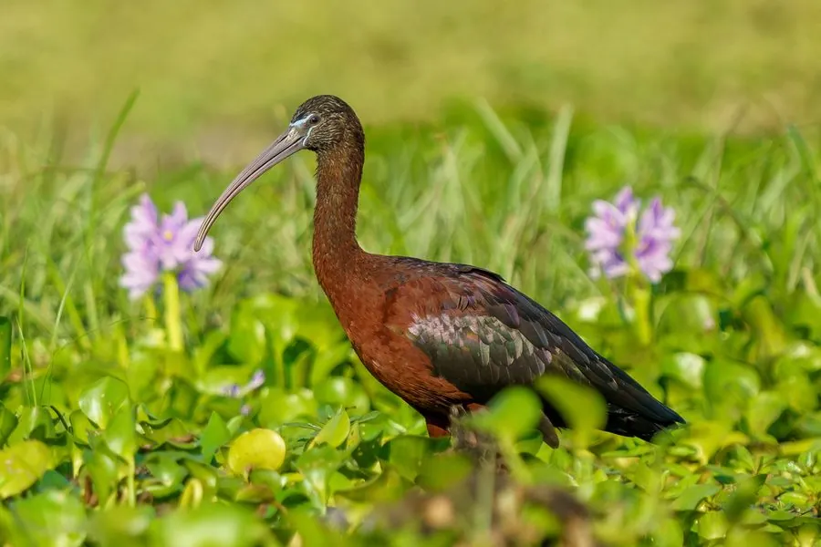

鸟类 · 动物界
彩鹮 Plegadis falcinellus

羽毛在阳光下泛出紫红和铜绿色金属光泽的鹮类，长喙下弯，常成群在浅水湿地中探食，中国数量稀少。
- 分类
- 门脊索动物门纲鸟纲目鹈形目科鹮科属彩鹮属
- 栖息环境
- 水田、沼泽、湖泊、河滩与沿海湿地等浅水区域
- 地理分布
- 欧洲南部、非洲、亚洲、美洲和澳大利亚，中国南方有零星记录
- 保护级别
- IUCN 无危（LC）；中国国家二级保护动物
物种志
彩鹮体长 48–66 cm，体重 485–800 g。它的全身羽毛呈深栗褐色，在阳光下泛出紫红、铜绿和绿色的金属光泽，嘴长而向下弯曲，腿灰绿色，飞行时颈部前伸、双腿后展。非繁殖期羽色较暗淡，繁殖期光泽更明显。
彩鹮广泛分布于欧洲南部、非洲、亚洲、美洲和澳大利亚的浅水湿地，中国南方有零星记录，数量稀少。它们栖息在水田、沼泽、湖泊和河滩，用下弯的长喙在泥土中探取鱼、虾、昆虫和软体动物，常成小群活动。繁殖期在树上或芦苇丛中集群营巢，每窝产卵 3–4 枚，孵化 20–23 天。彩鹮在中国被列为国家二级保护动物，全球种群被列为无危物种。
形态与习性
- 食性鱼、虾、昆虫和软体动物
- 体长48–66 cm
- 体重485–800 g
- 繁殖每窝 3–4 枚卵，孵化 20–23 天
- 羽色深栗褐色，阳光下泛紫红和铜绿金属光泽
- 寿命野外约 10 年
趣味知识
- 彩鹮的羽毛在阳光下会泛出紫红和铜绿色的金属光泽。
- 它用下弯的长喙在泥中探取鱼虾，常成小群在浅水区活动。
- 彩鹮在中国数量稀少，被列为国家二级保护动物。